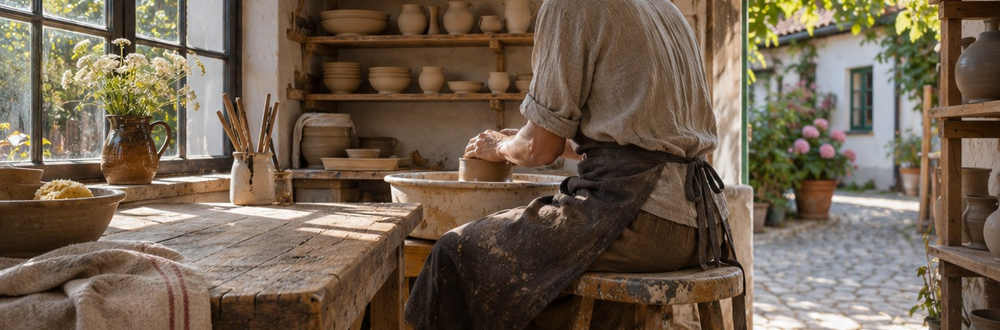
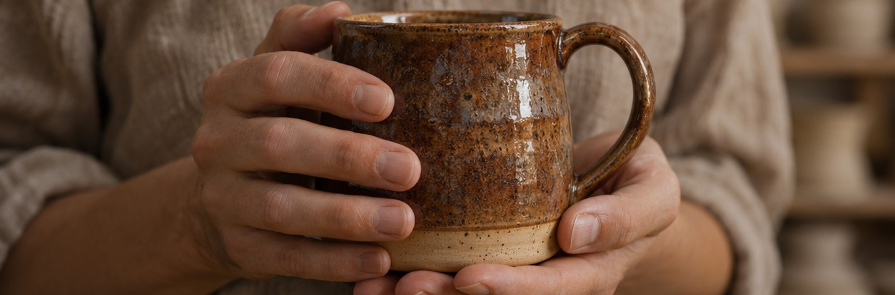
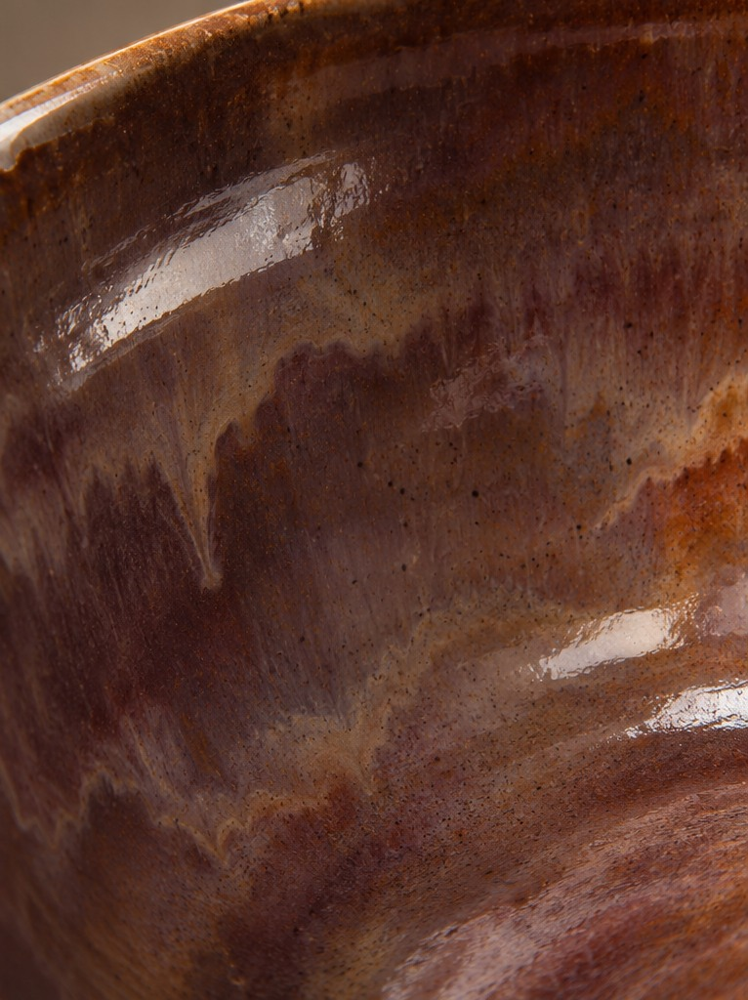

Korongozó kóstoló
1 szombat délelőtt · 3 óra · 18 000 Ft/fő
Az első kis tálad egy marék agyagból indul. Megmutatom, hogyan nyiss mélyedést a közepébe, és meddig engedd szélesedni a peremét.
Megnézem a kóstolót

Szia, Fehér Dóra vagyok, keramikus. Ülj le mellém a koronghoz! Egyszerre legfeljebb hatan dolgozunk. Jut időm megmutatni, hogyan tartsd a kezed, ha megszalad az első tálkád pereme.
Megnézem a tanfolyamokat
1 szombat délelőtt · 3 óra · 18 000 Ft/fő
Az első kis tálad egy marék agyagból indul. Megmutatom, hogyan nyiss mélyedést a közepébe, és meddig engedd szélesedni a peremét.
Megnézem a kóstolót3 kedd este · 3 × 2,5 óra · 45 000 Ft/fő
Egy nyitott tálka után magasabb pohárformával próbálkozunk. Három este alatt arra is jut időnk, hogy együtt megigazítsuk az edény talpát.
Megnézem a 3 alkalmas tanfolyamot4 csütörtök este · 4 × 2,5 óra · 58 000 Ft/fő
Hétről hétre visszaülhetsz ugyanahhoz a mozdulathoz. A végén hozd el egy saját forma ötletét, és segítek agyagba önteni.
Megnézem a 4 hetes kurzustHozd el a kollégáidat három órára! Legfeljebb hatan jöhettek, mindenki saját tálkát korongoz. A kezdést és a csoportdíjat együtt egyeztetjük.
Megnézem a céges csapatépítőt

Vedd kézbe nyugodtan a bögréket! Van, amelyiket a fülénél jó megfogni, és van, amelyik úgy esik jól, ha két tenyérrel körbeöleled.
2000 Szentendre, Bogdányi út 32.